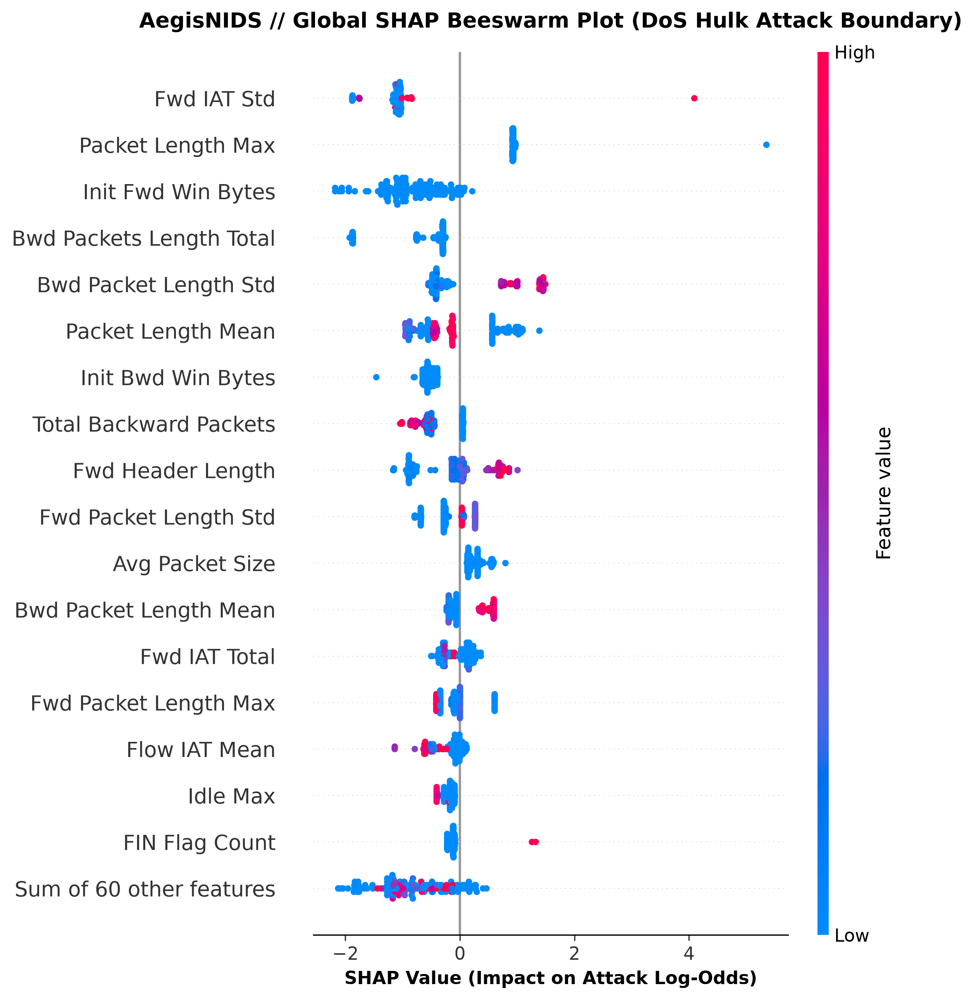

Figure 1 (Thesis / Report Caption): Global SHAP Beeswarm Summary Plot on CICIDS2017 traffic. Each point corresponds to an individual network flow. Red indicates high feature values, while blue indicates low values. Features like Bwd Packet Length Mean, Init Bwd Win Bytes, and Flow IAT Mean exert the strongest directional influence on intrusion detection verdicts.